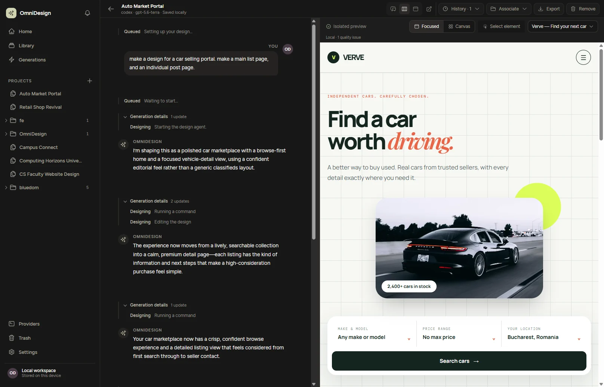

OmniDesign
An AI design tool that turns prompts into multi-page UI designs, powered by the AI coding agents people already pay for.
- Drives locally installed Claude Code, Codex and similar tools, so users bring their existing subscriptions instead of another API bill.
- Electron, React and TypeScript desktop app for Windows and macOS (Apple Silicon and Intel).
- Every pull request runs typechecking, unit and component tests, a production build and an Electron end-to-end suite.
- Every green push to main ships versioned installers to GitHub Releases, picked up by the app’s built-in auto-updater.